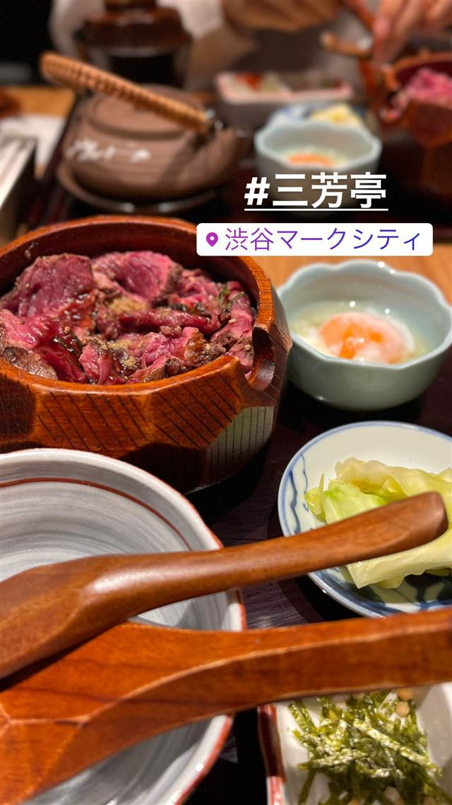

エスニック・各国料理 · ベトナム · 渋谷
ミス・サイゴン（MISS SAIGON）
ベトナム人スタッフが作る野菜たっぷりのフォーとバインセオ
ミスサイゴン
渋谷・道玄坂にあるベトナム料理店「ミス・サイゴン」は、厨房もホールもベトナム人スタッフが担う本格派。現地の味を再現したフォーやバインセオなど、野菜たっぷりの家庭料理が楽しめる。
| 看板 | フォー、生春巻き、バインセオ |
|---|---|
| こだわり | 現地の味を再現した本格ベトナム家庭料理で、野菜をたっぷり使ったヘルシーな構成が特徴 |
| 予算 | 夜 ～¥5,999 |
| 定休日 | 無休 |
| 場所 | 渋谷駅 東京都渋谷区道玄坂2-29-18 |
| 注意 | 渋谷駅から徒歩圏の道玄坂にある隠れ家的な立地（ビル上階） |
食べたもの：ベトナム料理
NEARBY
近い店・同じ系統の店
-
 パスタ 渋谷
KURA 渋谷店
元プロゴルファーら異業種出身者が始めた、もちもち生パスタ50種以上
昼 ¥1,000～¥1,999 夜 ¥2,000～¥2,999
パスタ 渋谷
KURA 渋谷店
元プロゴルファーら異業種出身者が始めた、もちもち生パスタ50種以上
昼 ¥1,000～¥1,999 夜 ¥2,000～¥2,999
-

うなぎ 渋谷 渋谷マークシティ -
 ベトナム 恵比寿
ニャーヴェトナム 本店 (Nha Viet Nam)
ベトナム大使館の要請で2002年に開業したベトナムカレー麺
昼 ¥1,000～¥1,999 夜 ¥3,000～¥3,999
ベトナム 恵比寿
ニャーヴェトナム 本店 (Nha Viet Nam)
ベトナム大使館の要請で2002年に開業したベトナムカレー麺
昼 ¥1,000～¥1,999 夜 ¥3,000～¥3,999
-
 ベトナム 有楽町
Ya Kun Kaya Toast 東京国際フォーラム店
1944年シンガポール創業の自家製カヤジャムトースト
昼 ～¥999 夜 ～¥999
ベトナム 有楽町
Ya Kun Kaya Toast 東京国際フォーラム店
1944年シンガポール創業の自家製カヤジャムトースト
昼 ～¥999 夜 ～¥999
-
 ベトナム
mansion_ikoku
ベトナム
mansion_ikoku
-
 ベトナム 学芸大学駅
Stand Bánh Mì（スタンドバインミー）
フレンチでワインを担当していた店主が営む10時間出汁のフォー
夜 ¥4,000～¥4,999
ベトナム 学芸大学駅
Stand Bánh Mì（スタンドバインミー）
フレンチでワインを担当していた店主が営む10時間出汁のフォー
夜 ¥4,000～¥4,999